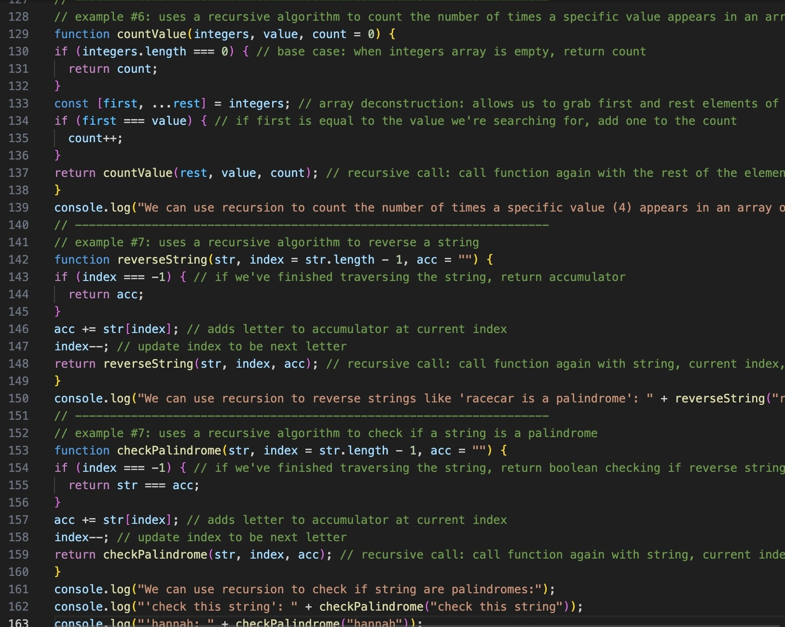

I'm currently trying to become a better programmer and will be sharing what I build here—projects are open source on GitHub.
Personal Website
- A webpage built to showcase interests and future projects.
- Features responsive layout, embedded YouTube content, custom Google Fonts, Font Awesome icons, page-load animations, fixed bottom gradient overlay, project cards with hover transforms, and flexbox styling.
- I learned how to structure content with semantic HTML elements for clarity and accessibility, implement css flexbox, grid, interactive hover effects & fade in animations, connect to external APIs, initialize & manage git repo, and deploy webpages to a live server/domain.
- Deployed June 24, 2025
JavaScript Fundamentals Repo

- A growing collection of .js files explaining basic javascript concepts through well-commented examples and early-stage logic projects.
- Created as a beginner-friendly reference and for continued practice.
- Covers functional programming basics like writing functions with return values; working with objects and property keys; various recursive algorithms like factorial, Fibonacci, and palindrome checking; scoping rules with var, let, and const; and an early-stage musician matching logic script using a recursive selection sort.
- Created July 29, 2025